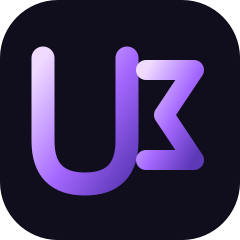

Sadece Yazılım
30.000 TL
25.000 TL
Kasapos Windows POS yazılımı
- Sınırsız (süresiz) lisans
- Tüm Kasapos modülleri
- İşletmeye özel HWID lisansı
- QR menü web sitesi hediyesi
- İlk yıl alan adı dahil
- Kurulum ve başlangıç eğitimi

UCW YAZILIMTeklif Al ↗25.000 TL Sadece Yazılım veya 40.000 TL Her Şey Dahil Paket paketini seçin. Tek seferlik ödeme, süresiz lisans.
Her iki pakette de tek seferlik ödeme, süresiz yazılım lisansı, QR menü web sitesi hediyesi ve ilk yıl alan adı dahildir.
Kasapos Windows POS yazılımı
Kasapos POS yazılımı, dokunmatik monitör, termal yazıcı, kurulum ve eğitim
Kasapos Connect ile Android telefonunuzu kasa bilgisayarına bağlayabilirsiniz. Gelen aramaların otomatik algılanması cihaz modeline ve izinlere bağlıdır; uyumluluk kurulum öncesinde kontrol edilir.
İzmir, Manisa, İstanbul ve Kütahya içindeki işletmeler için yerinde kurulum desteği.
Türkiye'nin her yerinden teknik destek için bize ulaşabilirsiniz.
Hayır. Sadece Yazılım 25.000 TL, Her Şey Dahil Paket 40.000 TL; her ikisi de tek seferlik ödemedir.
Windows işletim sistemli bilgisayarlarda çalışır. Kurulum öncesi cihaz uygunluğu kontrol edilir.
Evet, QR menü web sitesi hediye ve ilk yıl alan adı dahildir.
Kasapos Connect ile Android telefona gelen aramaları bilgisayar ekranında görüntüleyebilir, numara ve kayıtlı müşteri bilgileriyle hızlıca sipariş açabilirsiniz. Otomatik arama algılama her Android cihazda garanti edilmez; uyumluluk ve izinler kontrol edilir. İzmir, Manisa, İstanbul ve Kütahya içinde yüz yüze kurulum, Türkiye genelinde 7/24 teknik destek sunulur.